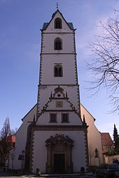

Die Busdorfkirche ist eine Kirche in Paderborn, die nach dem Vorbild der Grabeskirche in Jerusalem entstand. Das Stift Busdorf war ein 1036 gegründetes Kollegiatstift in Paderborn. Stift und Kirche lagen ursprünglich außerhalb der Stadt, wurden aber im 11./12. Jahrhundert im Zuge der Stadterweiterung in diese einbezogen.
Der im Jahre 1009 zum Bischof von Paderborn erhobene Meinwerk bemühte sich tatkräftig um die Stärkung des von ihm in verarmtem Zustand übernommenen Bistums und investierte dabei einen Großteil seines persönlichen Vermögens. So ließ er den im Jahre 1015 neu geweihten Paderborner Dom wiederherstellen und stiftete 1014 das Kloster Abdinghof in Paderborn. Um 1033 sandte Bischof Meinwerk den Abt Wino von Helmarshausen nach Jerusalem, mit dem Auftrag, die Maße der im Jahre 1009 zerstörten Grabeskirche und des Heiligen Grabes aufzunehmen.